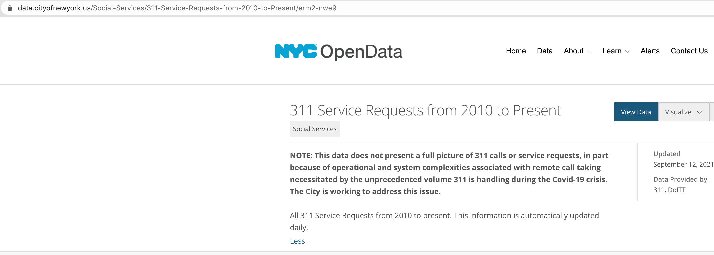
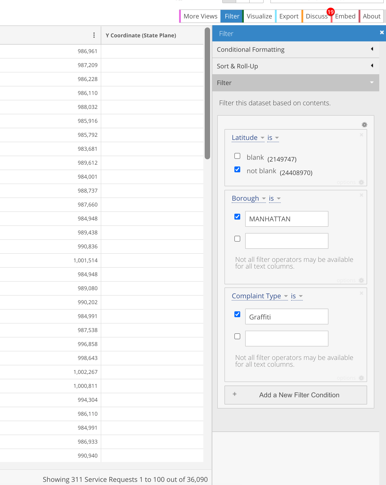
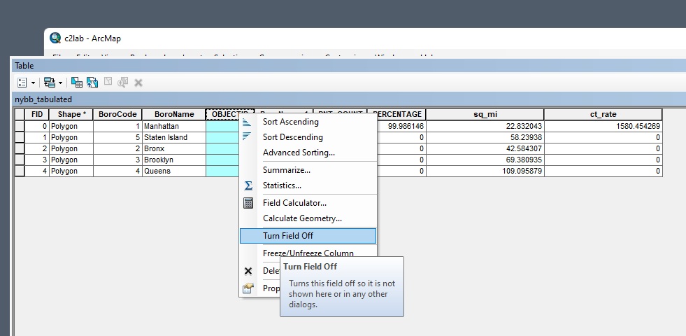

Preamble
In this second technical lab, we will complete any remaining steps of Monday’s demonstration lab then turn to the NYC 311 dataset. These lab steps should be used extensively to aid with the completion of the second assignment due Sunday evening at 11:59pm.
Data
The data for this demonstration lab comes from a previous NYC 311 filtering process which will be detailed in this lab and used in this week’s assignment - located HERE.
Once the download is complete, place the .csv into a directory you make entitled c2lab2.
Connect a new .mxd via ArcCatalog to the new c2lab directory and save that new .mxd as c2lab.mxd
Step 1
- Utilize the ArcCatalog > Create Feature Class > From XY Table to produce a feature class for the NYC data points. Point the results to the
c2lab2, saving as a.shpwith a coordinate systemWGS84. View results in TOC and the Data Frame:
.png)
- View Results:

When specifying the X and Y fields, make sure to point latitude to the Y field, and longitude to the X field; a common mistake is a backwards pairing order which results in an incorrect mapping.
Step 2
Save the results from Step 1 as c2lab.mxd. Next, we will navigate to the 311 dataset via the Getting Started with Open Data directions.
Our Filter conditions will be as follows, which results in 36,090 observations:
Filter Conditions = Latitude NOT blank | Manhattan | Graffiti


As we have already mapped this filter condition (36,090 observations within Manhattan with a Complaint Type as Graffiti), we will not continue with a download process.
For Assignment 2, utilize a Created Date filter to restrict your results to a manageable number of observations.

Created Date filter applicationStep 3
Download the NYC Borough Boundaries from NYC City Planning

Unzip this dataset and place into the c2lab directory. Import the nybb.shp into the .mxd. Notice how NYC looks like its ‘lying down on its side’; this is a map projection issue. Here we are using the WGS84 coordinate system which elongates features in a west > east orientation.

In order for NYC to display ‘correctly’; that is NOT ‘lying down on its side’, we need to do a data frame adjustment. Click on Data Frame Properties within the Data Frame and change the coordinate system for the data frame to NAD_1983_StatePlane_New_York_Long_Island_FIPS_3104_Feet.
Search for this particular projected coordinate system using a search term like new york or better yet FIPS 3104.
.png)
Step 4
Next, we will run the Tabulate Intersection tool that we previewed in Class 2 Demonstration Lab.
Note that this tool will now take some time as we are asking for 36K+ points to be evaluated. Make sure to send the results to the default.gdb location, not the c2lab directory. This will save time and create efficiency.

Save the c2lab.mxd with the table result in the project TOC.
Step 5
Open the tabular result from Step 4 and note both Shape_Area and PNT_COUNT. In your assignment, you will expect NO NULL values as you will very likely have many points in all boroughs, not just Manhattan.
 Next we will
Next we will join this table to the original nybb.shp utilizing the following join fields, originating the join from the nybb.shp:

In order for table joins to exist beyond temporary memory, they must be exported to a directory as a new .shp. We will do this export process together, naming the new feature nybb_tabulated:

.shpReview result at table:

Step 6
Next we will create two new fields so that we can derive a rate of observations per borough polygon in addition to the absolute count in the PNT_COUNT column:


Step 7
Currently the Shape_Area column is area measured in square feet. How do we know this? We can check the layer properties to check the linear unit of the layers coordinate system:

Square Feet is not a meaningful rate unit when dealing with polygons the size of NYC boroughs. We’d be much better off expressing our rate as n per square miles not n per square feet. To do this transformation, we will use the Field Calculator and the following formula in the Shape_Area column:
Shape_Area * 0.00000003587006428
.png)

Next, within the ct_rate column, we will simply divide the PNT_COUNT column by the sq_mi column:


Step 8
With our calculations complete, for the assignment we will want to export these results in a nice, compact efficient table to augment the main map frame for our 311 service points atop the 5 NYC boroughs.
To start, turn off fields that are unneeded:


Next, we can create alias names that will export to the layout for better table legibility:


Before final table export to layout, we can alter the table appearance as follows:

.png)
Finally, preview the table export and save the project .mxd:

Concluding Remarks
In this tutorial lab for the 311 Dataset, we started with latitude and longitude coordinate pairings for thematic observation points first filtered at the data source. We then mapped these points within ArcGIS, creating a project with NYC Planning features for thematic context. Next, we derived valuable summarizations through a table join and table manipulation process. We finished with the necessary components to creating a final output featuring both cartographic features and table summary results.